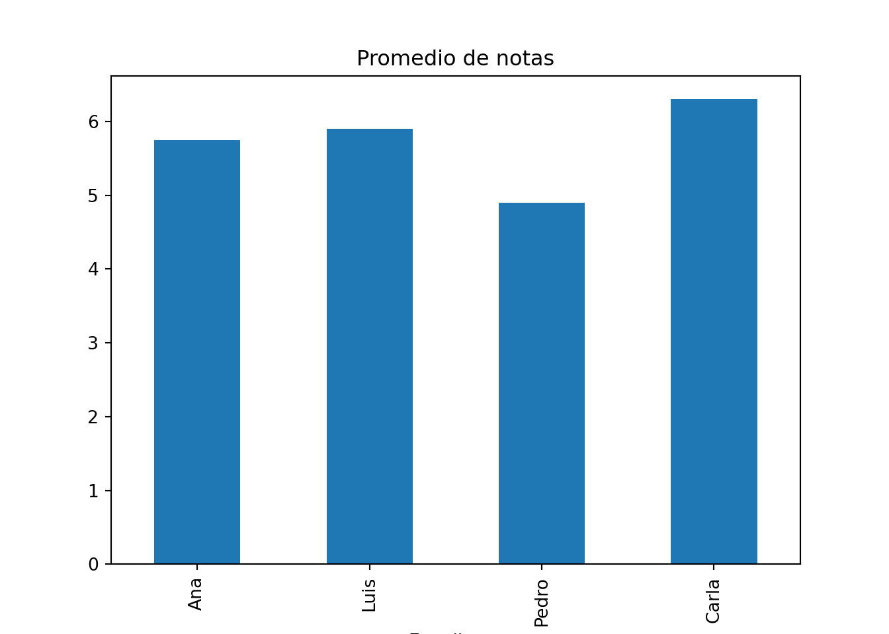
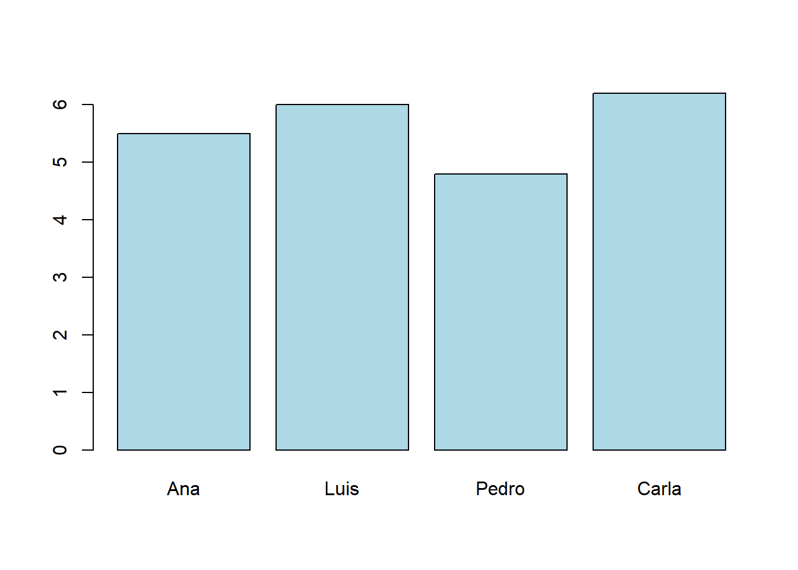

x = [1, 2, 3, 4, 5]
sum(x)/len(x)3.0Documentación y Presentaciones con Quarto
En este módulo exploraremos Quarto como una plataforma integral para la creación de materiales académicos. A diferencia de procesadores tradicionales (Word, PowerPoint), Quarto integra texto, código y resultados en un mismo flujo, lo que permite reproducibilidad, transparencia y evita duplicar esfuerzos.
Con Quarto, un docente puede preparar reportes, artículos, libros o presentaciones en un solo entorno: el mismo código que produce un resultado también genera las tablas y gráficos que se incluyen en el documento.

Quarto es un motor de publicación reproducible que sigue tres pasos principales:
.qmd (basado en Markdown).Esto significa que un mismo archivo .qmd puede generar:
.qmdUn archivo .qmd tiene tres partes principales:
Ejemplo mínimo:
title: “Ejemplo de reporte” author: “Nombre del docente” format: html ————
Texto en Markdown.
x = [1, 2, 3, 4, 5]
sum(x)/len(x)3.0Archivo reporte.qmd:
title: “Reporte de Notas” author: “Nombre del docente” date: “2025-09-17” format: html ————
import pandas as pd
import matplotlib.pyplot as plt
data = {"Estudiante": ["Ana", "Luis", "Pedro", "Carla"],
"Nota1": [5.5, 6.0, 4.8, 6.2],
"Nota2": [6.0, 5.8, 5.0, 6.4]}
df = pd.DataFrame(data)
df["Promedio"] = df[["Nota1","Nota2"]].mean(axis=1)
df Estudiante Nota1 Nota2 Promedio
0 Ana 5.5 6.0 5.75
1 Luis 6.0 5.8 5.90
2 Pedro 4.8 5.0 4.90
3 Carla 6.2 6.4 6.30df.plot(x="Estudiante", y="Promedio", kind="bar", legend=False)
plt.title("Promedio de notas")
plt.show()
Renderiza con:
quarto render reporte.qmd
Esto genera un HTML con tabla y gráfico directamente integrados.
Archivo presentacion.qmd:
title: “Presentación de Clase” author: “Nombre del docente” format: revealjs —————-
Introducción al curso y objetivos principales.
La fórmula cuadrática:
\(x = \frac{-b \pm \sqrt{b^2 - 4ac}}{2a}\)
estudiantes <- c("Ana", "Luis", "Pedro", "Carla")
notas <- c(5.5, 6.0, 4.8, 6.2)
barplot(notas, names.arg = estudiantes, col="lightblue")
La salida será una presentación interactiva con navegación por diapositivas.
format: html por pdf o docx en el YAML.simple, night, sky) y añadir transiciones.Ejemplo de YAML con opciones personalizadas:
format: revealjs: theme: simple transition: slide incremental: true
Subir los archivos .qmd a un repositorio.
Activar GitHub Pages desde Settings > Pages.
Configurar la carpeta de publicación (docs/ suele ser la más usada).
El sitio estará disponible en:
Esto convierte tus reportes y presentaciones en recursos accesibles públicamente.
reporte.qmd con datos ficticios de notas y un gráfico de barras.presentacion.qmd con tres secciones: introducción, concepto clave y visualización.